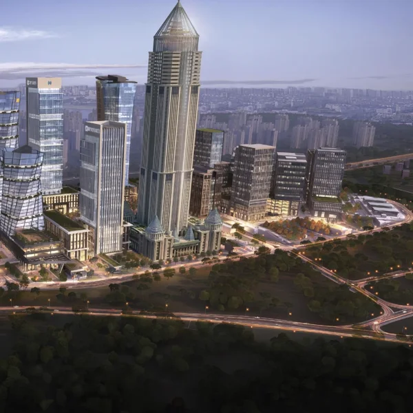
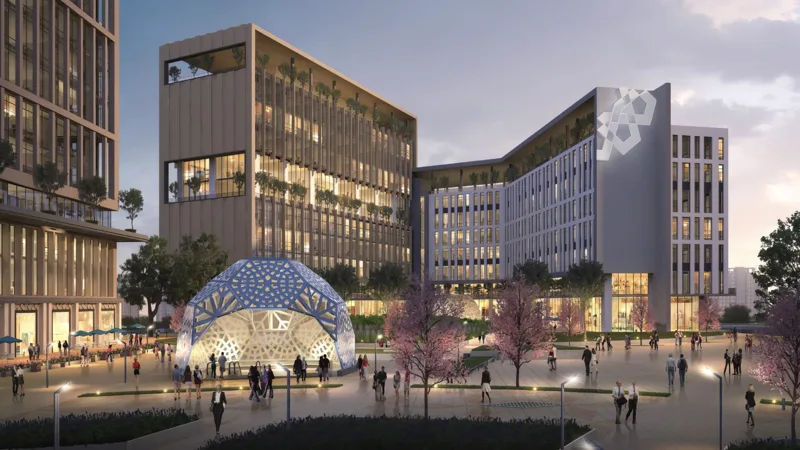
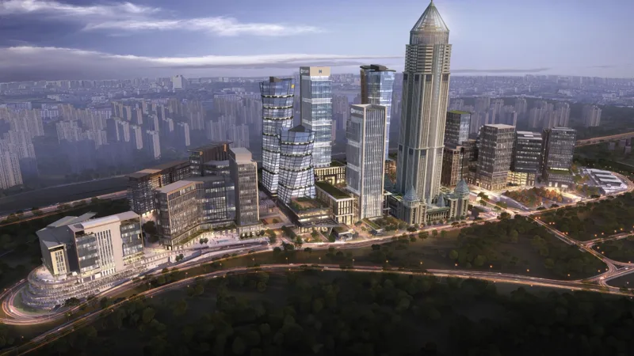

Finansal teknolojilerin sınırlarını yeniden çiziyoruz.
Girişimcilerden aldığı ilham ve güçle Fintech Zone, Türkiye'nin global rekabetçiliğini artırmakta ve İstanbul Finans Merkezi'nin stratejik bir parçası olarak fintek ekosistemini güçlendirmektedir.

Fintech Zone: Ulusal Kümelenme ve Teknoloji Lideri
11. Kalkınma Planı hedeflerinden biri olarak kurulan “İstanbul Finans ve Teknoloji Üssü Teknoloji Geliştirme Bölgesi”, Fintech Zone İstanbul markası ile İstanbul Finans Merkezi'nde faaliyet göstermektedir. Fintech Zone İstanbul aynı zamanda T.C. Sanayi ve Teknoloji Bakanlığı'nın yayınladığı “Ulusal Teknoloji Girişimciliği Stratejisi Eylem Planı” çerçevesinde fintek alanında kümelenme faaliyetlerinin yürütücüsü olarak yetkilendirilmiştir.
Küresel İşbirliğiyle Gelişen Kümelenme
Kümelenme faaliyetlerimiz kamu, özel sektör, sivil toplum ve akademi arasında oluşturulacak yerel, ulusal ve uluslararası iş birliği ile “Türkiye'nin en büyük fintek kümelenmesi” olarak desteklenecektir. Fintech Zone İstanbul, yeni nesil bir teknopark olmanın yanında, kümelenme, temsiliyet, İstanbul Finans Merkezi ile bütünlük ve globalleşme gibi temel taşlar üzerine kurulu bir platform olarak, sektörün gelişimine önemli katkılarda bulunmayı hedeflemektedir.
Vizyonumuz
Milli strateji ile fintek ekosistemine yön veren ve insanlık yararına en fazla değer üreten global bir merkez olmak.
Misyonumuz
- Etkin ve dinamik bir fintek kümelenmesi ile güçlü bir fintek ekosistemi oluşturma,
- Fintek girişimlerinin yerelden globale açılmasına katkı sağlama,
- Hızlı, nitelikli ve sürdürülebilir büyümeye yönelik iş birlikleri geliştirme,
- Fintek girişimlerinin AR-GE becerilerini ve kapasitelerini güçlendirme, yatırıma erişimini kolaylaştırma,
- Altyapı, muafiyet ve teşvik destekleri ile fintek girişimcilerinin maliyet ve rekabet avantajı elde etmelerini sağlama.
Fintek dünyasına yeni bir bakış
Yeni Nesil Teknopark
Yeni nesil bir teknopark olarak fintek odaklı, dijital programlarla büyümeyi destekleyen modern bir ekosistem sunuyoruz.
Kümelenme
Ülkemizin tüm fintek ekosistemine ulaşacak çeşitli programlarla bir fintek kümelenmesi inşa ediyoruz.
Temsiliyet
Regülasyon konusunda kamu ile, rekabetçilik anlayışının inşasında ise bankacılık sektörü ile fintekleri buluşturmayı planlıyoruz.
Globalleşme
Ülkemizden global pazarlara, hinterlandımızda yer alan ülkelerden Türkiye'ye girişim transfer etmeyi hedefleyen bir stratejiye sahibiz.
İFM ile Bütünlük
İFM ve TGB kanun ve mevzuatlarının sunduğu fırsatlarla finteklerin entegrasyonuna katkı sağlıyoruz.
Girişim ve İnovasyonun Merkezi
Girişimcilerin yenilikçi fikirlerini hayata geçirmelerine olanak tanıyan dinamik bir inovasyon merkezi sunuyoruz.
Kampüs: İstanbul Finans Merkezi
Yönetim Ofisi: Finanskent mah. Finans cd. No: 13/1 Ümraniye - İstanbul. Teknopark Binası: Finanskent mah. Finans cd. F Blok. No: 34 Ümraniye - İstanbul.



Görseller: kurumsal kimlik arşivindeki kampüs renderları.
Bize ulaşın, fintek yolculuğunuza birlikte devam edelim! İletişim
Ortaklık Yapımız